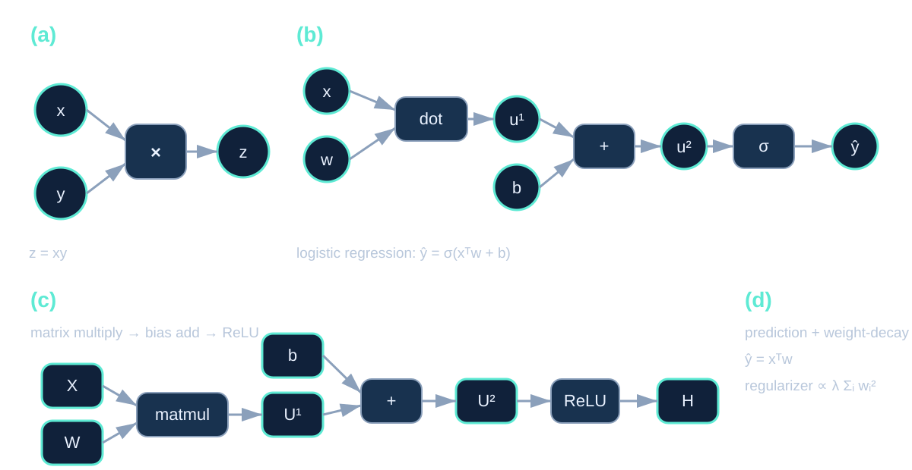
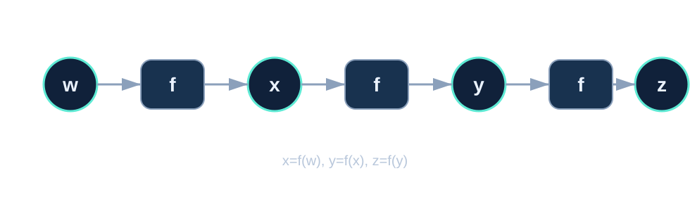
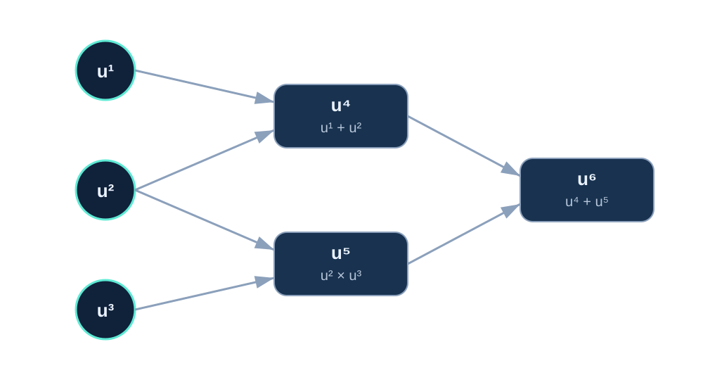

Backpropagation
먼저 Backpropagation은 gradient를 계산하는 과정이다. Gradient를 계산한 후 parameter를 실제로 업데이트하는 학습 과정 자체를 의미하는 것은 아니다.
즉 Backpropagation은 loss function으로부터 각 parameter에 대한 gradient를 효율적으로 계산하고, 이후 gradient descent와 같은 optimization algorithm이 이 gradient를 이용해 parameter를 업데이트한다.
6.5.1 Computational Graphs
Backpropagation 알고리즘을 보다 정확하게 설명하기 위해 계산 과정을 computational graph로 나타낼 수 있다.
Computational graph에서는 각 node가 변수(variable)를 나타내고, edge는 한 변수의 값이 다른 변수의 계산에 사용된다는 관계를 나타낸다. 하나의 node는 scalar, vector, matrix, tensor와 같은 다양한 형태의 값을 가질 수 있다.

예를 들어 logistic regression의 prediction은
와 같이 여러 개의 작은 연산으로 나누어 표현할 수 있다.
ReLU를 사용하는 layer에서는
와 같이 matrix multiplication, bias addition, nonlinear activation을 각각의 연산으로 나누어 computational graph에 표현할 수 있다.
6.5.2 Chain Rule of Calculus
Backpropagation의 수학적인 기반은 chain rule이다.
Scalar의 경우
\(y=g(x)\), \(z=f(y)\)라면,
이다.
Vector의 경우
\(x\in\mathbb{R}^{m}\), \(y\in\mathbb{R}^{n}\)이고 \(y=g(x)\), \(z=f(y)\)라고 하자.
이때 각 \(x_i\)에 대한 derivative는
로 계산할 수 있다.
이를 vector 형태로 쓰면
이다. 여기서 \(\dfrac{\partial y}{\partial x}\) 는 \(n\times m\) 크기의 Jacobian matrix이다.
Tensor의 경우
Tensor에서도 같은 원리가 적용된다.
즉 vector든 tensor든 현재 gradient에 local derivative 또는 local Jacobian을 적용해 이전 변수의 gradient를 계산한다고 이해할 수 있다.
Repeated Subexpressions
Chain rule을 이용하면 gradient를 계산할 수 있지만, 단순하게 식을 계속 전개하면 동일한 intermediate computation이 반복될 수 있다.

위 graph에서
라고 하자.
\(z\)를 \(w\)에 대해 미분하면 chain rule에 의해
이고,
로 쓸 수 있다.
\(x=f(w)\), \(y=f(f(w))\)를 대입하면
가 된다.
Forward 과정에서 \(x=f(w)\), \(y=f(x)\)의 값을 저장해 두면 backward 과정에서 해당 값을 다시 계산하지 않고 재사용할 수 있다.
6.5.3 Recursively Applying the Chain Rule
Computational graph의 node를 \(u^{(1)},u^{(2)},\dots,u^{(n)}\)이라고 하자.
\(Pa(u^{(i)})\)는 \(u^{(i)}\)를 계산하는 데 직접적으로 사용되는 parent node들의 집합을 의미한다.
Forward 과정에서는 입력 node부터 시작하여 각 node의 값을 순서대로 계산한다.
Algorithm 6.1 — Forward Propagation
- 입력 node \(u^{(1)},\dots,u^{(n_i)}\)의 값을 준비한다.
- \(i=n_i+1,\dots,n\) 순서로 각 node를 계산한다.
- 각 node에 대응하는 operation을 parent node들에 적용한다.
이 과정을 통해 최종 output node \(u^{(n)}\)을 얻는다.
Algorithm 6.2 — Backpropagation
Backward 과정에서는 최종 node에서 시작하여 graph를 역방향으로 따라간다.
먼저 최종 output에 대해
로 시작한다.
그리고 각 node \(u^{(j)}\)에 대해 \(u^{(j)}\)가 영향을 주는 child node들의 gradient를 이용하여 gradient를 누적한다.
즉 이미 계산된 상위 node의 gradient에 현재 edge에 해당하는 local derivative를 곱하고, 여러 경로가 존재한다면 그 값을 합산한다.
Algorithm 6.1, 6.2 예시
총 6개의 node가 있고 입력으로 \(u_1,u_2,u_3\)가 주어진다고 하자.

Algorithm 6.1의 forward 과정에서는 \(u_4\), \(u_5\), \(u_6\)가 순서대로 계산된다.
이제 \(u_6\)에 대해 각 node의 gradient를 구한다고 생각해보자.
Backpropagation은 graph의 각 edge를 역방향으로 따라가면서 이미 계산한 gradient를 재사용한다.
예를 들어 \(u_2\)는 \(u_4\)와 \(u_5\) 두 경로를 통해 \(u_6\)에 영향을 준다.
이때 \(\dfrac{\partial u_6}{\partial u_4}\)와 \(\dfrac{\partial u_6}{\partial u_5}\)는 앞선 backward 과정에서 이미 계산되어 있기 때문에 다시 처음부터 계산할 필요가 없다.
따라서 현재 필요한 local derivative인 \(\dfrac{\partial u_4}{\partial u_2}\)와 \(\dfrac{\partial u_5}{\partial u_2}\)만 계산하여 기존 gradient와 곱하고 합산하면 된다.
Backpropagation은 동일한 subexpression을 반복해서 계산하지 않고, forward 과정에서 저장한 intermediate value와 backward 과정에서 이미 계산한 gradient를 재사용한다. 따라서 scalar computational graph에서는 전체 계산량이 graph의 edge 수에 비례한다.